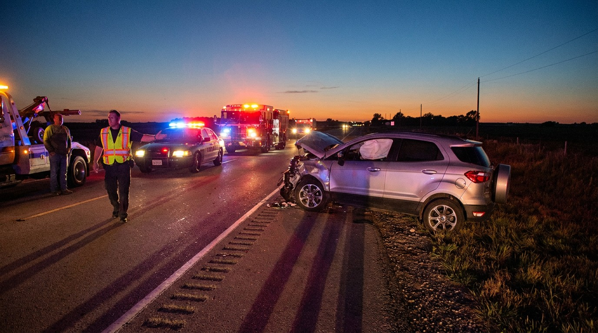

The Chevy Tracker Was a Suzuki in Disguise. It Killed 856 People.
Before you sign that lease, you might want to see this. The Chevrolet Tracker — sold from 1998 to 2004 as GM’s entry-level compact SUV — has a fatality rate of 7.83 deaths per 100 million vehicle miles traveled. That makes it the second deadliest vehicle per mile in the entire FARS database, trailing only the Hyundai Veloster.
To put that in perspective: the Ford Escape, a direct competitor in the compact SUV class, has a rate of 0.95. The Honda CR-V sits at 0.53. The Toyota RAV4 — the vehicle the Tracker was theoretically competing against — comes in at 0.19 deaths per 100M VMT. The Tracker is 41 times deadlier per mile than the RAV4. Forty-one.
Here’s the part that should make you angry: the Tracker wasn’t really a Chevrolet. It was a rebadged Suzuki Vitara,[1] built on Suzuki’s lightweight body-on-frame platform, assembled through GM’s partnership with Suzuki. GM slapped a bowtie on it, parked it next to Silverados in showrooms, and let first-time SUV buyers assume they were getting General Motors engineering. They weren’t. They were getting a kei-car-derived platform stretched to American highway speeds.
The impairment rate tells the rest of the story: just 12.7% of fatal Tracker crashes involved an impaired driver, well below the national average of roughly 20%. These weren’t drunk drivers wrapping Trackers around telephone poles. These were sober people driving a vehicle that simply could not protect them in a collision.
And the dying didn’t stop when production ended. The last Tracker rolled off the line in 2004, but model year 2013 — meaning Trackers that were 9 to 15 years old — recorded 101 fatalities, the deadliest single year in the dataset. Model year 2015 added another 85. Old Trackers kept circulating through used-car lots and Craigslist listings, finding new owners who had no idea what they were climbing into.
GM eventually replaced the Tracker with the Equinox, which has a rate of 0.36 — a 22-fold improvement. The Equinox is a real GM product built on a real GM platform with real crumple zones. The Tracker was a costume. And 856 people paid the price for a badge swap.